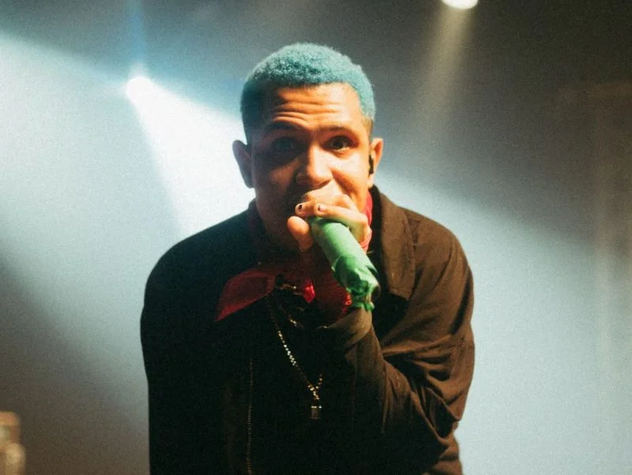

biografia
Kamaitachi nasceu em 24 de março de 1999, na Zona Oeste do Rio de Janeiro. Desde jovem, ele demonstrou interesse pela escrita, criando histórias e contos. Aos 12 anos, começou a compor suas primeiras músicas, e em 2017, decidiu lançar suas canções no YouTube, o que mudou sua vida

Fantasia sombriaFantasia Sombria é uma das produções mais ambiciosas do Kamaitachi (Rafael). Com quase 8 minutos de duração, a faixa se destaca por não ser apenas uma música, mas uma audiossérie de fantasia sombria dividida em cinco atos. O Kamaitachi utiliza sua marca registrada o mistério e o lúdico para construir uma ópera folk/rock que narra a saga de um garoto e Bartolomeu, um gato mercenário com amnésia, tentando derrotar o Mago Lagarto. A longa duração permite que o artista crie uma atmosfera imersiva, mudando o ritmo e a sonoridade conforme os personagens avançam por florestas vivas, ilusões temporais e o confronto final no castelo. É um formato raro no cenário musical atual, funcionando como um verdadeiro conto de fadas gótico narrado em forma de música.
O Significado do Nome
O nome artístico foi inspirado em um Yōkai (criatura do folclore japonês): o Kamaitachi, uma criatura parecida com uma fuinha dotada de garras afiadas que corta as pessoas com o vento sem que elas percebam. Rafael escolheu esse nome como uma metáfora para o seu estilo: a junção de letras ácidas e agressivas com melodias doces e bonitas.
Estilo Musical e Identidade
Embora transite por vertentes do Indie Rock, Pop Rock, Folk e Blues, a principal marca do Kamaitachi é o seu foco em Storytelling (a arte de contar histórias através da música). Suas composições funcionam como contos góticos, crônicas sombrias ou fábulas urbanas, fortemente influenciadas pelo universo dos games, séries, filmes de terror e literatura fantástica. Ele começou a compor e escrever contos aos 12 anos. Em 2017, lançou sua carreira solo na internet com produções totalmente caseiras, gravadas e editadas usando apenas o celular (como o seu primeiro lançamento, "chuvadesexta.gif").
Principais Sucessos
Além de produções longas e épicas como "Fantasia Sombria", o artista construiu uma base de fãs gigante com faixas que se tornaram grandes hits em plataformas digitais e no YouTube, incluindo: - "Morgana" (um de seus maiores marcos e responsável por impulsionar muito sua carreira). - "Cabelos Arco-íris". - "Homem Torto". - "6 Balas" (uma narrativa em formato de velho oeste que também ganhou uma continuação). Com uma legião de fãs fiéis nas redes sociais (especialmente entre o público jovem), ele é visto hoje como um dos maiores contadores de histórias da música nacional independente.